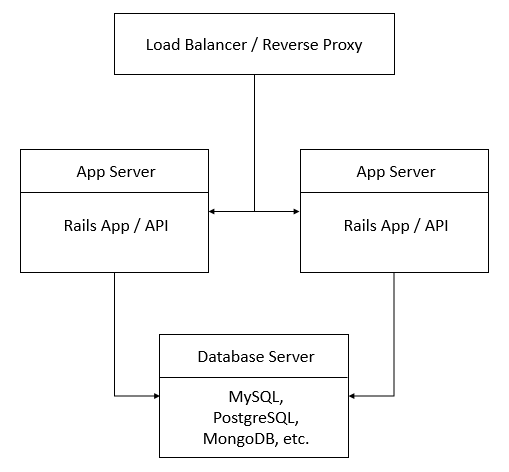

Setting up a dedicated PostgreSQL server to host Ruby on Rails application servers, scaling, PostgreSQL, Ruby on Rails
Difficulty: 4
Time: 30 minutes
In this article, you'll create a PostgreSQL server to use as a database layer for scaling a Ruby on Rails (RoR) application. You'll learn to combine a PostgreSQL database server with a RoR web server to build a robust and scalable application.
This article is third in a three-part series. To visit the first two parts, see:
Rails supports various relational and non-relational databases, such as PostgreSQL in a relational database and NoSQL in a non-relational database. When beginning app development with Rails, you can use SQLite as the database because it does not require constraints and can handle a small volume of data. However, if the application includes large volumes of data and requires foreign and primary keys as constraints, then consider RDBMS.
Choose a database backend carefully, as you cannot change it often. Some popular databases that can handle large volumes of data are Oracle, MSSQL, MySQL, and PostgreSQL. In this article, we'll use PostgreSQL, the most popular and lightweight database.
pgadmin3 for the administrator. This is an easy-to-access GUI for PostgresSQL and is an optional installation but useful when used on a desktop.
Enter 1 for default provider on prompt
/usr/local/pgsql/data or /var/lib/postgres/data location to store data.
/var/lib/postgres directory and its contents to the postgres user (the default user when you install PostgresSQL).
initdb, which is installed with PostgreSQL. This must be done as the postgres user.
postgres user, and restart the PostgreSQL service.
postgres user password, and run the psql command.
postgres" database role.
If prompted, type your password again.
postgres system user.
The database server will be used to load balance multiple applications.
To reduce server load and CPU usage and to make the database server centrally accessible, you need a load-balancer, two application servers, and one database server to set up the database server layer. This is how the architecture will look:
Replace with listen_addresses = '*' or listen_addresses = 'Your_public_ip'
:wq, and then pressing the Enter key.
pg_hba.conf using the vim text editor.
# Put your actual configuration here # ..
# TYPE DATABASE USER ADDRESS METHOD host all all 0.0.0.0/0 md5
:wq, and then pressing the Enter key.
Now, your Rails server should be running. Press CTRL+C to terminate the process.
config application directory, and open database.yml:
production: adapter: postgresql # set you database adpteer encoding: utf8 #encoding database: rails_myapp #your database name username: rails_myapp_user # database username password: pwd # replace it with your password host: 192.168.13.130# host where postgresql is setup port: 5432 pool: 10
:wq, and then pressing the Enter key.
Gemfile to add the pg gem.
:wq, and then pressing the Enter key.
GemFile dependencies.
If the PostgreSQL server fails to connect, check the firewall settings, and allow the port for the PostgreSQL server to accept requests from both incoming and outgoing ports. Make sure that the ports are allowed for required IPs only, for secure Internet access.
In this article, you learned to set up a scalable PostgreSQL database server and deploy it with a Rails application.